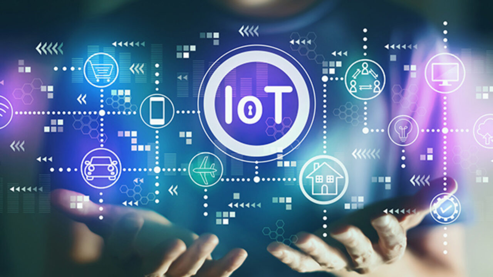

Advance Analytik offers a wide range of software development services tailored to meet your specific needs. We specialize in custom software development, web and mobile app development, e-commerce solutions, quality assurance, maintenance and support, cloud computing, and integration services. With our expertise, we deliver high-quality software solutions that drive business growth and success.
Our IoT-enabled smart sensors collect and transmit data wirelessly, providing real-time insights into various parameters. From temperature and humidity to pressure and motion, these sensors offer continuous monitoring for enhanced process control and efficiency.
Our IoT-connected analyzers streamline data acquisition and analysis, enabling remote monitoring and control. These advanced analyzers integrate with cloud-based platforms, allowing for centralized data storage, analysis, and accessibility from anywhere at any time.
With our IoT devices, we enable powerful data analytics capabilities. By leveraging machine learning and artificial intelligence, we can extract meaningful patterns and insights from the vast amount of data collected. This enables predictive analytics, anomaly detection, and optimization of processes for improved performance.
IoT devices play a crucial role in industrial automation, enabling remote monitoring and control of machinery and processes. With IoT-enabled devices, businesses can achieve higher operational efficiency, reduce downtime, and enhance productivity.
Our IoT devices contribute to the development of smart cities and infrastructure. By integrating sensors and devices into various urban systems, such as transportation, energy, and waste management, we can create sustainable and efficient urban environments.
IoT devices enhance security and monitoring capabilities by providing real-time surveillance and alerts. From video surveillance cameras to environmental sensors, these devices help ensure safety, detect anomalies, and respond proactively to potential risks.
At Advance Analytik, we harness the power of IoT devices to enable smarter and more connected data-driven solutions. Whether you are in manufacturing, healthcare, logistics, or any other industry, our IoT devices empower you to make informed decisions, optimize processes, and unlock new opportunities for growth and innovation. Contact us to explore how our IoT solutions can transform your operations.